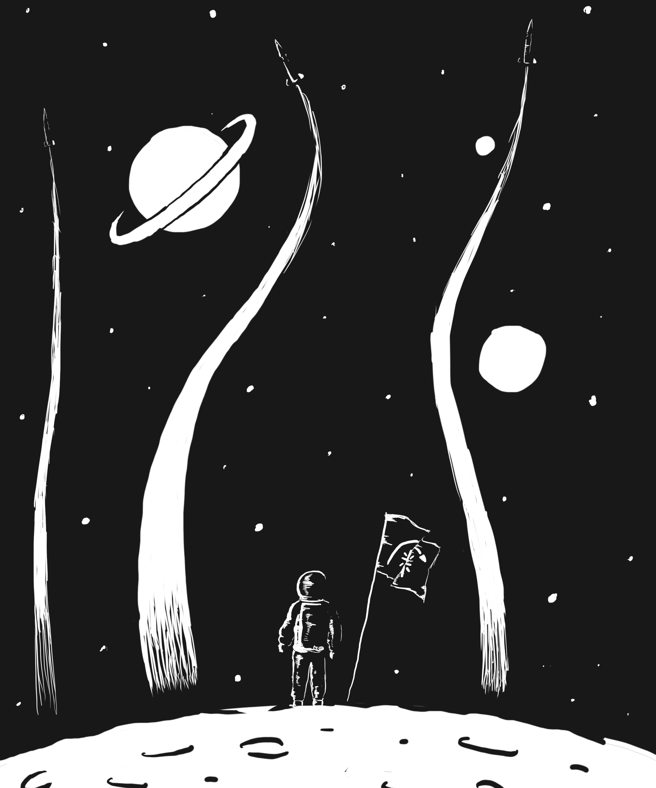

Customizing
Regardless of which setup you have used, you will now need to customize the virtual machine. Log in to the virtual machine as the user customizer with the password customizer (same username and password), and follow the subsequent prompts.
Note that customization requires your partner’s Cal ID. Both you and your partner should customize your VM using the same IDs (the order of the IDs does not matter).
If you want to do some initial exploration by yourself before you’ve finalized your team, you can start off using just your ID for this customization step. Once you have your team in place, you’ll need to start again with a clean VM image customized as mentioned here. Any exploits you’ve developed for your private VM image will require porting (re-determination of the addresses to use in them). This should go quickly once you understand the exploit.
If the IDs used by the VM are incorrect, you and your partner may fail the autograder tests. Make sure that you include your EXACT ID number.
Once you have finished customizing your virtual machine, you will receive the username and password for the first question.
